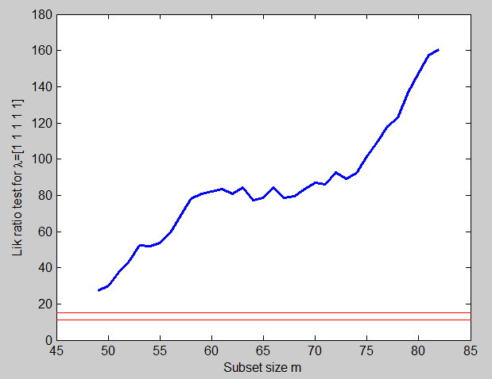
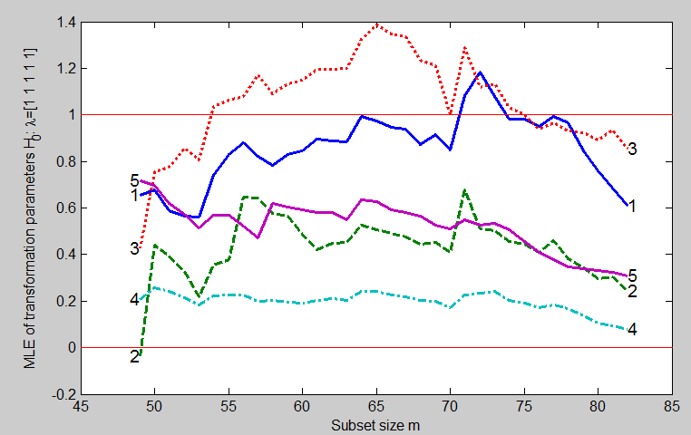
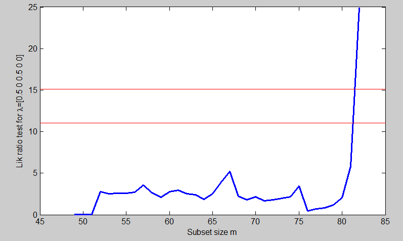
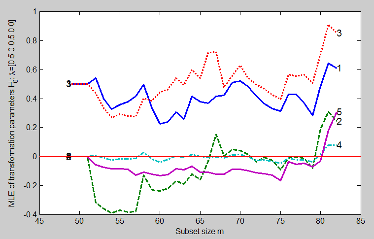

| Flexible Statistics Data Analysis Toolbox™ |
|
| Provide feedback on FSDA toolbox |
The purpose of this section is to exemplify the procedure for finding multivariate transformations. We use a series of searches, the parameter values for the transfomration in successive searches being guided by the results of previous searches.
In order to illustrate the procedure we use the Horse Mussels data. There are 82 observations on Horse mussels from New Zealand. The five variables are:
y1: shell length, mm
y2: shell width, mm
y3:
shell height, mm
y4: shell mass, grams
y5: muscle mass,
grams.
Our purpose is to see whether multivariate normality can be obtained by joint transformation of all five variables.
We start with a forward search with untransformed data. Figure below is the forward plot of the resulting likelihood ratio test, to be compared with \chi^2_5. The value at the end of the search is 160.56 and the statistic is significant throughout the range shown in the figure. The data need to be transformed.
% Mussels data.
% FS based on untransformed data H_0:λ=1 for all variables
load('mussels.mat');
Y=mussels.data;
% Figure 4.18 p. 178 of ARC (2004)
[out]=FSMtra(Y,plotslrt',1);

To obtain a first idea of a better transformation consider the forward plot of the estimates of λ in Figure below
% Figure 4.19 p. 178 of ARC (2004)
[out]=FSMtra(Y,'plotsmle',1);

These estimates all trend down at the end of the search, indicating the continuing introduction of units which are further and further from the untransformed multivariate normal model. The jump at m=71 is caused by the introduction of unit 78. The general shape of the curves towards the end of the search suggests we might try λ = (1, 0.5, 1, 0, 1/3). Although 1/3 is not one of the standard five values we have previously used, it is sometimes appropriate for transforming volume, or mass, to have units of length, which are here the dimension of the first three variables. The exact values of the transformation parameters are not crucial, since we can continue to try a variety of forward searches. The forward plot of the likelihood ratio statistic for testing λ = (1, 0.5, 1, 0, 1/3) is in Figure below
% Compare plot of lrt with Figure 4.20 p. 178 of ARC (2004) [out]=FSMtra(Y,'la0',[1 0.5 1 0 1/3],'plotslrt',1);

This is an appreciable improvement over the former figure which contained LRT using untransformed data and, indeed, the transformation is almost acceptable at the end of the search, that is for all the data. However, it is not acceptable at some earlier stages in the search. So there are some outliers entering earlier on which are causing the preferred transformation to change. The forward plot of parameter estimates in Figure below shows, by the changes in estimates near the end of the search, that at least some of the outliers are now entering towards the end.
% Compare plot of mle with Figure 4.21 p. 178 of ARC (2004) [out]=FSMtra(Y,'la0',[1 0.5 1 0 1/3],'plotsmle',1);

For example, unit 78 now enters when m=80. To find parameter values for our third search we move to slightly smaller values of m. At m=75 an outlier appears to be entering which is causing an appreciable jump in the value of \hat{λ}_5. The estimates just before this suggest we try λ = (0.5, 0, 0.5, 0, 0), a stronger transformation than before. This transformation does very well. Figure below is the forward plot of the likelihood ratio test for λ = (0.5, 0, 0.5, 0, 0).
% Compare plot of lrt with Figure 4.22 p. 180 of ARC (2004) % Compare plot of mle with Figure 4.23 p. 181 of ARC (2004) [out]=FSMtra(Y,'la0',[0.5 0 0.5 0 0],'plotsmle',1,'plotslrt',1);

We have found a transformation which is supported by all the data except the outliers, which enter at the end of the search. The forward plot of the parameter estimates in Figure below shows that, until m=79, three of the parameter estimates are stable around zero and two around 0.5.

The only one thing which remains to be done is to use the multivariate fan plot to confirm these individual values of λ. See page mullt_fsmfan.html
| Provide feedback on FSDA toolbox |
|
|
Introduction to transformations in multivariate analysis | Multivariate transformations: confirmatory analysis |
|